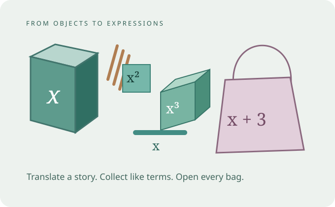

Start with a box of pens. Build expressions, sort like terms and discover why opening identical bags helps us expand brackets.
Concrete → visual → symbolicWork at your own pace

Same ideas. Different representations. Explain what each symbol means.
01 / TRANSLATING
What does the story say?
A letter represents a number—not the name of an object. Identical unopened pen boxes contain the same number of pens.
x = pens in one unopened pen boxy = clips in one unopened clip box
Build the story with the + and − buttons, or type a count. Count unopened boxes here—not the pens hidden inside them.
Expression for the total number of items
An unopened pen box is one x quantity. Two identical boxes are x + x = 2x. One pen box and one clip box give x + y; their unknown counts need not be equal.
Expression, equation or formula?
x + 3An expression describes a quantity.2x + 3 = 7An equation states that two expressions are equal. This equation is true when x = 2.n = x + 3A formula links variables: n is the total when three are added to x.
x + x ≡ 2x is an identity: both expressions have the same value for every x.
02 / COLLECTING LIKE TERMS
Same letter. Same power.
A coefficient counts copies of a term. In these shape models, the letters represent lengths; the squares and cubes represent their powers. Keep each variable and power unchanged when collecting.
x
A length model
x² = x × x
An area model
x³ = x × x × x
A volume model
THE UNSORTED EXPRESSION
Tap a term, then its matching group. You can also drag terms into a group using a mouse.
WRITE IT SYMBOLICALLY
What is the collected expression?
03 / EXPANDING BRACKETS
Multiply the whole bag.
Brackets group the contents of one bag. A number outside the brackets tells you how many identical copies of every item you have.
Identical groups
Every bag is identical. The multiplier applies to every term inside the brackets, not just the first one.
Stretch: apply the same rule to new examples
Here the pictures give way to symbols. Multiply each term, including its sign.
3(x − 2)
3 × x + 3 × (−2) = 3x − 6. Subtraction is an operation, not a bag containing negative physical objects.
−(16 − b)
The factor is −1: −1 × 16 + (−1) × (−b) = b − 16.
4d(d − 4)
4d × d + 4d × (−4) = 4d² − 16d. Multiplying d by d makes d².
(e − 9)(e + 3)
Each term in the first bracket multiplies each term in the second: e² + 3e − 9e − 27 = e² − 6e − 27. This is an optional next step after single brackets.
REVIEW / YOUR TURN
Practise, explain, try again.
Use the separate revision simulator for mixed questions or a focused session on translating, powers, like terms, substitution or brackets.
These models connect familiar objects to algebraic expressions. Shapes are schematic; colour supports grouping, while the letter and exponent determine whether terms are alike.